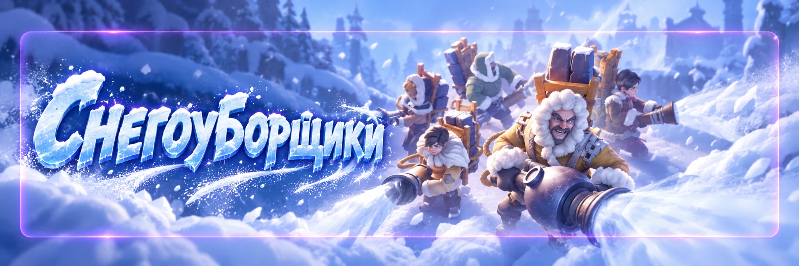

Снегоуборщики
Автор: SOVA58
Мини-игра на 3 дня, где главный ресурс — топливо. Чем экономнее чистим снег и чем раньше усиливаем полезную экипировку, тем дальше пройдём.
⛽ Топливо
Не тратим его на каждый квадрат снега. Смотрим, что реально помогает пройти уровень, получить важную награду или открыть полезный объект.
🧥 Что улучшать первым
В начале особенно ценны улучшения, которые ускоряют восстановление топлива. Поэтому одежду/куртку выгодно прокачивать как можно раньше. После неё смотрим на снижение расхода топлива и удобство очистки.
🔥 Топка
Не спешим вручную чистить снег вокруг топки. Сначала собираем доступный уголь, улучшаем топку и только потом смотрим, что осталось. Часть снега она убирает бесплатно.
🧍 Выжившие
По возможности спасаем их рано. Чем раньше они начинают помогать, тем больше пользы дадут на оставшейся карте.
🚜 Суперочиститель
Автоматически завершает текущую область за указанную цену в топливе и выдаёт награды области. Это экономит время, но не гарантирует экономию топлива: ручное прохождение иногда дешевле.
Условия открытия по обновлению разработчиков 2026 года: постоянный доступ после достижения 24-й области хотя бы один раз или когда в государстве наступает 3-й сезон «Снегоуборщиков». Для RU доступность функции проверяем в своём событии.
На ранних уровнях Суперочиститель может быть удобен.
Сравнивайте его цену с ручной расчисткой, особенно с 14-й области.
Схема игроков, а не обязательное правило: авто 1–4, 6–7, 9 и 11–13; вручную 5, 8, 10 и поздние области. Разные маршруты, предметы и развитие экипировки меняют результат.
Источник механики открытия: официальное обновление разработчиков. Оценка выгодных уровней основана на сравнении затрат игроками.
🎯 Почему отдельные уровни лучше вручную
На них можно получить бесплатные эффекты, ракеты, топливо, помощь выживших или очистку от топки. Автоматическая цена этого не учитывает, поэтому ручной маршрут иногда выходит дешевле.
🚀 Ракеты
Не прожигаем их на ранних картах без необходимости. Чем дальше уровень, тем дороже снег и тем больше топлива может сэкономить ракета. Для F2P особенно полезно копить запас и активно использовать ракеты на поздних этапах.
🦌 Бесплатные эффекты
Если получили оленя или другой эффект массовой очистки, направляем его туда, где больше всего неочищенного снега. Не тратим бесплатный эффект на почти пустой участок.
♾️ Бесконечное топливо
Во время такого эффекта чистим максимально дорогой участок. Особенно выгодно совмещать его с сильной массовой очисткой, если механика текущего уровня это позволяет.
🐺 Звери
Если нужные награды и фрагменты уже собраны, не обязательно продолжать убивать каждого зверя. На поздних уровнях это может съедать топливо без заметной отдачи.
⛄ Снеговики
Считаем выгоду. Если путь и бой стоят дороже, чем награда, цель можно пропустить. Если снеговик стоит прямо по маршруту, ситуация обратная.
🎯 До какого уровня идти
Для F2P разумная цель часто находится в районе 16–20 уровня. Дожимать максимальный уровень любой ценой не всегда выгодно. Иногда лучше стабильно доходить до 20-го несколько событий подряд и копить полезные предметы.
🚀 Что сохранять между событиями
Обычное неиспользованное топливо не переносится в следующий запуск; развитие экипировки также сбрасывается. А вот Ракеты 2.0 и прогресс коллекций можно сохранять между циклами.
Когда достигли своей цели, проверьте, доступен ли обмен лишнего топлива на ракеты. Если доступен, это полезнее, чем оставлять топливо до завершения события.
Обновление ракет: Ракета 2.0 завершает неисследованные задачи в радиусе действия, включая выживших, зверей и снеговиков, если эта механика уже действует в вашей RU-версии.
💬 Опыт игроков
- Куртку качаем раньше. Чем дольше работает бонус к восстановлению топлива, тем больше итоговая выгода.
- Суперочиститель не жмём автоматически. На части уровней ручное прохождение дешевле.
- Рабочая схема: 1–4 авто → 5 вручную → 6–7 авто → 8 вручную → 9 авто → 10 вручную → 11–13 авто → дальше чаще вручную.
- Ракеты бережём на поздние уровни.
- Выживших спасаем рано.
- Не чистим снег вокруг топки до её улучшения.
- После достижения своей цели останавливаемся. Необязательно каждый цикл выжимать максимум.
🚫 Частые ошибки
- поздно улучшать восстановление топлива;
- чистить весь снег вокруг топки заранее;
- использовать Суперочиститель на каждом уровне;
- тратить ракеты на дешёвых ранних картах;
- убивать все необязательные цели;
- продолжать тратить топливо после достижения нужной награды.
✅ Быстрая схема
Главное
«Снегоуборщики» выигрываются экономией топлива. На ранних этапах используем Суперочиститель там, где он реально дешевле, а с поздних уровней чаще переходим на ручную расчистку и бережём ракеты для дорогих участков.